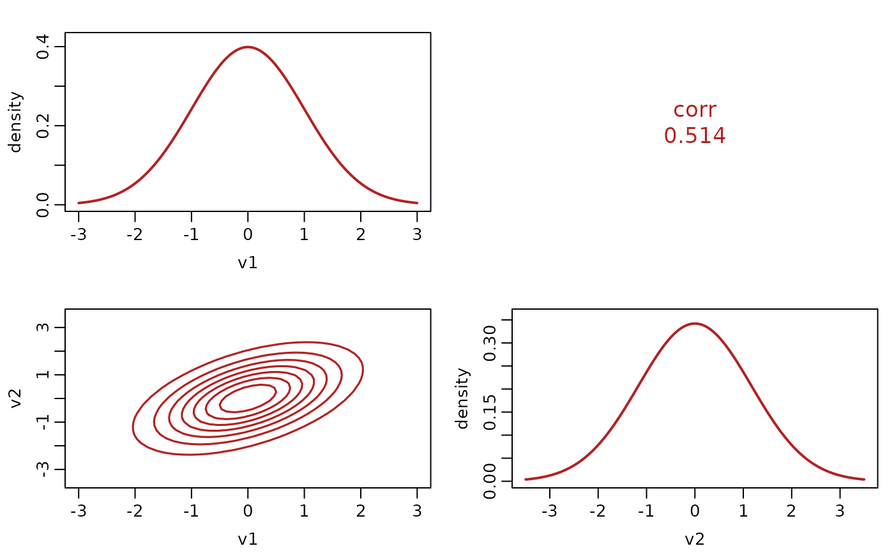
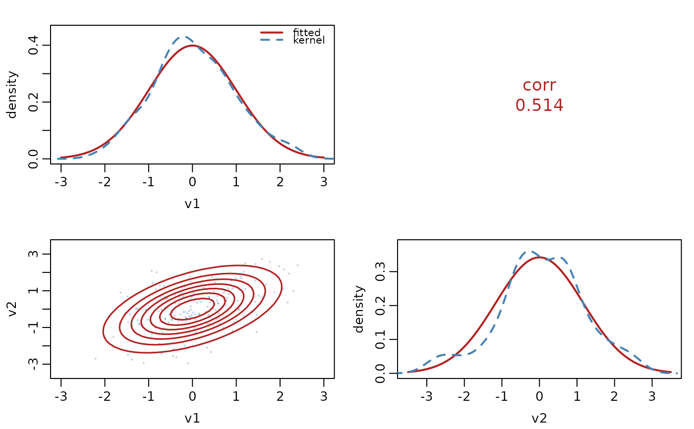

The shared engine of plot.multivariate_distrib() and the multivariate
branch of plot.distrib_fit(). It lays out one panel per ordered pair of
the chosen coordinates: the marginal density on the diagonal, contours of
the bivariate marginal below it, and the implied correlation printed above
it. Every panel comes from mv_marginal(), so nothing is integrated.
Arguments
- d
A
multivariate_distrib()object.- theta
A named list of parameters, already aligned by the caller.
- which
An integer vector of coordinates, or
NULLfor all of them. More than three is an error.- n_grid
Points per axis, a single positive whole number.
- col_fit
Color of the fitted density, the contours and the printed correlations.
- data
An \(n \times p\) matrix of observations, or
NULLfor a distribution with no data behind it.- col_data
Color of the observed summary, used only when
datais given. Defaults to"#4682B4".- ...
Unused.
Value
NULL, invisibly. Called for the plot it draws, and it changes
graphics::par("mfrow") and the margins, so a caller who needs the
previous settings back saves them first.
Details
When data is supplied the diagonal also carries a kernel density estimate
of the observed coordinate and the off-diagonal panels carry the
observations, so the fitted shape and the sample are read against each other
in one frame. The kernel estimate is the comparison that assumes no model:
it is what the data say without the family's help.
The range each coordinate is drawn over is two and a half standard
deviations either side of the location, with the spread taken from
mv_sigma(), so a Student t at \(\nu \le 2\) still has a range where
variance() would give it none.
See also
plot.multivariate_distrib() and plot.distrib_fit(), its two
callers, and mv_marginal() for the panels.
Examples
d <- mvgaussian1_distrib(2)
theta <- list(mu1 = 0, mu2 = 0, sigma_log_L1 = 0,
sigma_log_L2 = 0, sigma_L2.1 = 0.6)
# Without data: the density alone.
op <- graphics::par(no.readonly = TRUE)
distributions7:::mv_pairs_panels(d, theta, NULL, 40, "#B22222", data = NULL)

graphics::par(op)
# With data: the same frame carries a kernel estimate and the observations.
set.seed(1)
op <- graphics::par(no.readonly = TRUE)
distributions7:::mv_pairs_panels(d, theta, NULL, 40, "#B22222",
data = distrib_rng(d, 200, theta))

graphics::par(op)